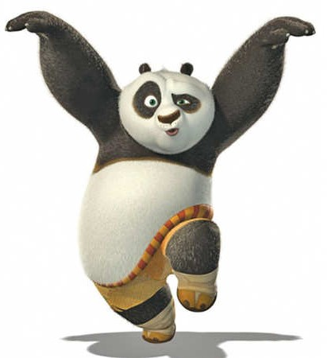

Pandas are my favorite animal because they are peaceful and enjoy eating bamboo in beautiful forests.
Marie Curie was a pioneering physicist and chemist. She was the first woman to win a Nobel Prize and the only person to win a Nobel in two different sciences.
Curie's research led to significant breakthroughs in understanding radioactivity. For more information, visit this biography.
"Be less curious about people and more curious about ideas." - Marie Curie